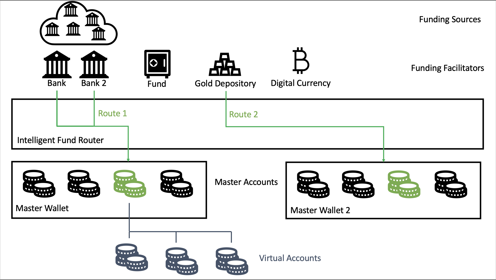

Great to meet you at Seamless 2022!
We’re thrilled to be in Dubai and to be among such a fantastic group of entrepreneurs,
technologists and thinkers.
We've put this page together because there's not always time to give someone we've just met the
full flavour of what we can do.
If you've been given this URL it's because we think our
services might be of interest to you.
Anchorpoint Technology Limited
Anchorpoint are a UK based boutique consultancy and product development partner specialising in Financial Technology. Our co-founders have decades of experience building systems and running large teams in some of the biggest UK financial services organisations.
Both founders have held senior roles at Hargreaves Lansdown, the UKs largest D2C investment service, and were instrumental in building it into the dominant player it is in the market today.
Partnering with us
Partnering with us could mean harnessing our broad and deep knowledge of FS systems in a consulting capacity, working with us to design and build a new product or service, or anything in between.
We would be delighted to hear from you, either via our ideas portal or by phoning us on +44 (0)203 488 6955.
Chris Bowles
Chris has worked in Financial Services for over 20 years. A software engineer by profession, Chris has held senior leadership, board and C-level positions in FTSE100, start-ups and PE backed businesses, and has held regulated Senior Management Functions (SMF) in the UK.
Chris is as happy building new technology as he is in the boardroom and is passionate about technology and how it can deliver better outcomes for businesses.
Chris has a Masters’ degree in Advanced Software Engineering from Leicester University. He sits on the governance steering committee for the Open Savings & Investments initiative, a key part of the UK's Open Finance strategy.
Charlotte Killick-Cole
Charlotte started her career in Financial Services in 2001. With a keen focus on software delivery, Charlotte has spent over 20 years successfully delivering initiatives for a broad range of businesses, from scale-up to FTSE100.
Charlotte worked with Chris for the first time in 2004 to deliver a portfolio management system for Hargreaves Lansdown. Since then, the pair have collaborated on product launches, scalability programmes, business enhancements and strategic programme reviews. Recent joint ventures include the launch of an asset management platform for a high-net-worth broker and a strategically significant programme rescue for a PE backed advisor platform.
Charlotte and Chris decided to join forces permanently to form Anchorpoint Technology
Limited in 2022.
Consultancy
- Fintech & traditional Wealth Management. Unlike other consultancies, we have experience owning & operating systems rather than simply designing them, adding significant value to our expertise.
- CTO-as-a-service, portfolio & change management. Leadership through experience, knowledge and pragmatism.
- Programme & project audit, turnaround & rescue. If you have a large strategic change initiative that is in trouble, we can conduct an independent audit to help you understand the key issues and how they can best be fixed. Then, if required, we can manage all stakeholders towards a successful implementation of any recommendation remediation steps.
- Technology strategy. Setting strategies, reviewing for fitness, architecting for change. Pragmatic technology strategy focused on delivery of business outcomes.
Product Engineering
Our Bi-Modal delivery approach can fit your existing Ways of Working, or operate in a more opinionated and consultative manner to deliver value through process change and modernisation, e.g.:
- Product-led, agile, and reactive. Operating using a goals based and roadmap driven approach. Architecting for change (“Navigating using a SatNav”).
- Traditional plan-based Waterfall approach. Operating by developing an upfront plan, validating that plan and delivering activities sequentially (“Navigating using an Atlas”).
We can direct your technical teams, bring in our own dedicated teams or create a blended delivery capability using appropriate methodologies and Ways of Working.
- Greenfield. Idea shaping, product design, implementation planning. Proof of concepts & rapid MVPs. Full end-to-end development and implementation.
- Brownfield. Modernising, updating and improving existing systems to meet new non-functional requirements – e.g. more users, greater speed, operate in different environments. Add new functional components to existing systems to meet new business requirements.
- Bluefield. Extending an existing system by creating hybrid architectures, blending new and old seamlessly. Adding new components like mobile apps, web portals etc.
Work with us
As a boutique consultancy we're very happy to discuss different approaches to working together.
The first step is to visit our Ideas Portal and let us know how you think we can help.
Previous Engagements
Strategic Project Turnaround
Salvaging a failing multi-million pound strategic re-platforming project, saving the investment case for the PE shareholder. Managing technology, change, legal and procurement to deliver positive outcome in highly challenging circumstances.
Microservice Trading System
Distributed real-time architecture for international securities trading, with order management (stops, limits, FoK) & real-time pricing. Used to manage tens of thousands of retail orders per day with sub-millisecond latency.
Cash Savings Platform
Instrumental in the delivery of the largest savings platform in the UK, serving over
one million savers and facilitating over £1bn of savings pots.
Asset Management Platform
Created a full AM platform from scratch for a HNW investment service - with regulated money, online payments, security issuance, valuations, performance and automated reconciliation & reporting.
Portals, apps and CRM
Many engagements building dynamic, rich client portals & mobile apps with secure messaging functionality, document management etc. Experience building specialist FS CRM and LOB systems.
Regulatory Permission Delivery
Leading an organisation through the journey to become a regulated entity with
permissions to conduct necessary regulated activities (e.g. holding Client Money
& assets).
Portfolio Management System
An end-to-end solution for the management of discretionary fund portfolios for HNW investors. Including switching, re-balancing, trading, and associated requirements.
Dynamic On-boarding System
A mobile-first on-boarding tool allowing multiple complex investments to be applied for simultaneously with KYC/AML, digital signatures, administration and external fulfillment.
Hybrid Microservice Platform
Using Kubernetes hosted Microservices to modernise legacy monolithic platform tech, delivering cutting edge capabilities in a low-risk way and avoiding a re-platforming of assets.
Seamless 2022 Collaboration Opportunity
We have developed a Savings Marketplace solution concept, allowing savers and institutions to connect on an open platform – built on our proprietary cash management technology. This technology is designed to operate globally and blend traditional and non-traditional forms of funding.
If you would like to partner with us to bring this product to market in the UAE, we would be delighted to hear from you. Email us at collaborate@anchorpoint.co.uk or phone +44 (0)203 488 6955if you would like to discuss this opportunity.
Alternatively, if you would be interested to find out more about how our innovative new cash management technology can help you build a disruptive product or service, please get in touch.